五主题 × 双页面 × Before/After 对照评审。Before = main 分支（feat/multi-theme-system，未实施 atelier 试点），After = worktree feat/atelier-pilot-20260611-161001（已合入 atelier-card / atelier-page-bloom / atelier-page-grain / atelier-display 四条 opt-in 协议）。试点目标：在不破坏其它 3 套主题的前提下，仅对 atelier-dark 与 atelier-light 引入 Line B「Luminous Atelier」签名层。
html.atelier-dark / html.atelier-light 作为选择器前缀；在其它 3 套主题下保持 display:none 或继承默认值，确保字节级回退。| Utility | 作用 | 默认 | atelier-dark | atelier-light |
|---|---|---|---|---|
.atelier-card |
无框漂浮卡片：去掉 1px 边框、改用 halation 光晕 + 内白线 + 软阴影 | 透传 glass-panel 原边框/阴影 | halation + 内白线(0.025) + 22/48 暗阴影 | halation + 内白线(0.6) + 18/40 暖阴影 |
.atelier-page-bloom |
页面级双角光晕（fixed，pointer-events:none，z:0） | display:none | --bloom（teal + amber 双角） | --bloom（浅暖双角） |
.atelier-page-grain |
页面级胶片颗粒（SVG turbulence，fixed，z:1，mix-blend） | display:none | opacity 0.05 / overlay 混合 | opacity 0.025 / multiply 混合 |
.atelier-display |
编辑性衬线字体 + ss01/ss02 字形 + 负字距 | 继承默认 sans | Fraunces + −0.015em | Fraunces + −0.015em |
/#/settings、同一 viewport、同一 localStorage 主题切换；下文每行 = 一个主题，左 = Before（3008），右 = After（3009）。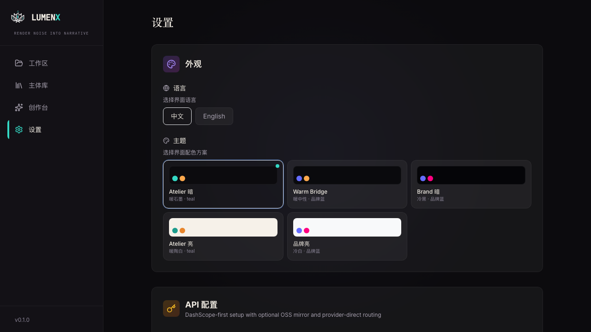
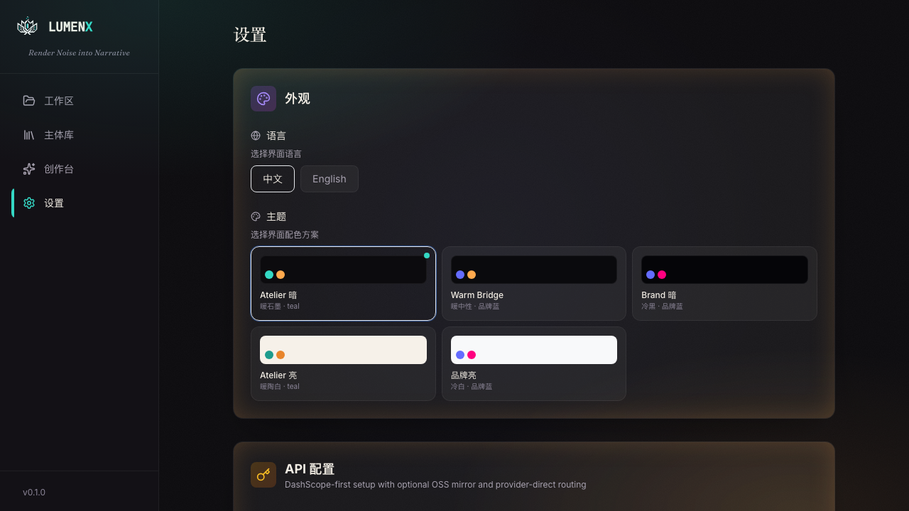
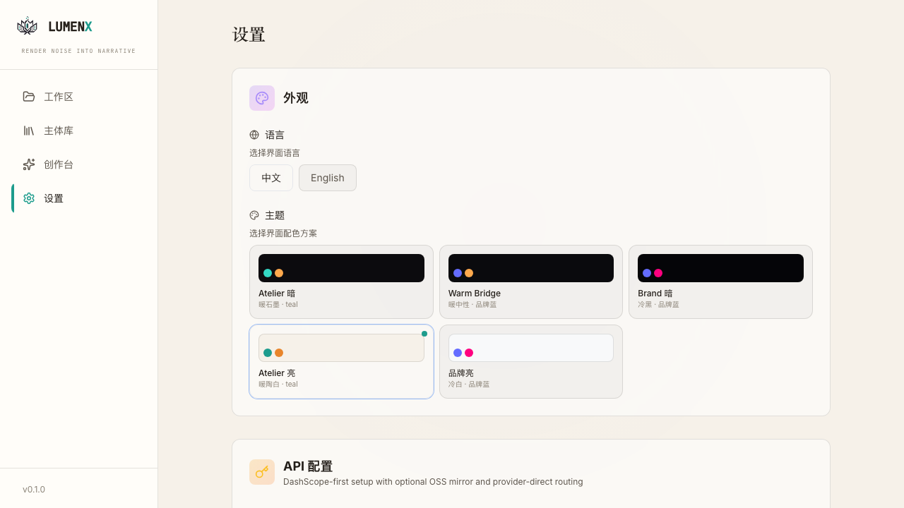
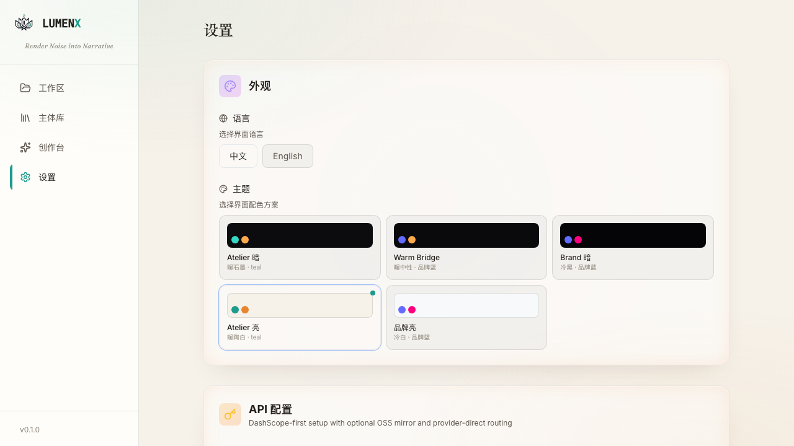
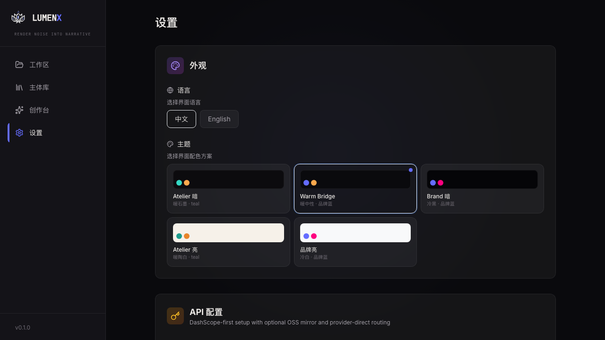
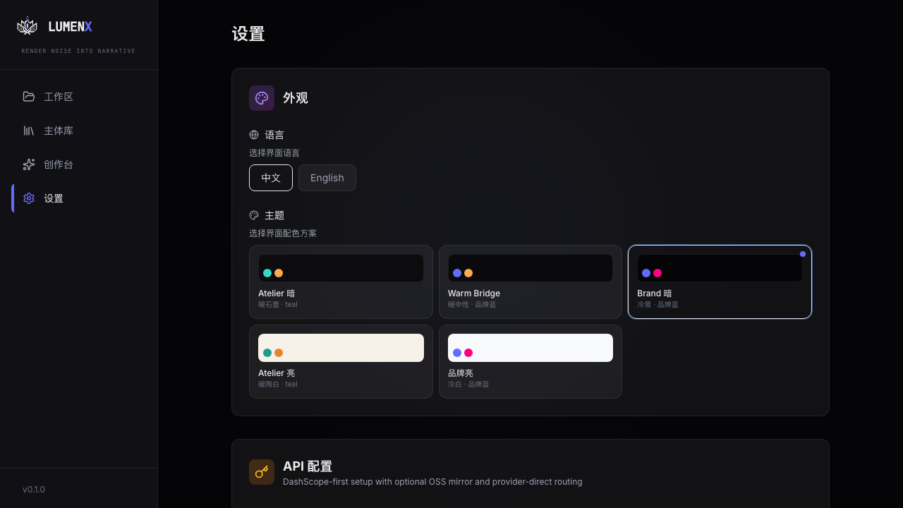
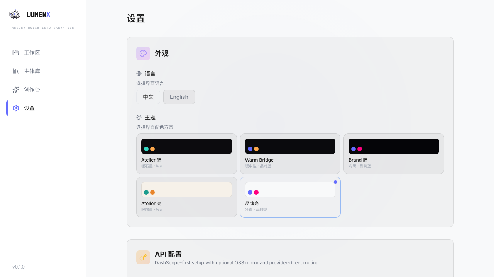
.atelier-card + H1 .atelier-display 影响。| 功能点 | Before（main） | After（pilot） | Delta |
|---|---|---|---|
| 语言切换（zh / en） | 2 个 toggle 按钮 | 2 个 toggle 按钮 | UNCHANGED |
| 主题预设卡片（5 个） | atelier-dark★ / bridge-dark / brand-dark / atelier-light / brand-light，含 base/primary/accent 三色块 | 同上 · 卡片 props 未改 | UNCHANGED |
| 默认选中 | atelier-dark | atelier-dark | UNCHANGED |
| 外层 section 卡片样式 | .glass-panel（1px 边框 + 模糊） | + .atelier-card（仅 atelier-* 触发：去边框、halation、内白线） | VISUAL |
| 页面 H1「设置」字体 | font-display = Space Grotesk | + .atelier-display → Fraunces（仅 atelier-*） | VISUAL |
.atelier-card。| 功能点 | Before（main） | After（pilot） | Delta |
|---|---|---|---|
| DashScope API Key | type=password, single-line | 同左 | UNCHANGED |
| 阿里云 Access Key ID | text input | 同左 | UNCHANGED |
| 阿里云 Access Key Secret | password input | 同左 | UNCHANGED |
| OSS Mirror（bucket / endpoint / base path） | 3 字段子块 | 同左 | UNCHANGED |
| Kling Provider（dashscope / vendor） | radio + access/secret 双字段（vendor 模式） | 同左 | UNCHANGED |
| Vidu Provider（dashscope / vendor） | radio + API key | 同左 | UNCHANGED |
| MuleRun / MuleRouter 一键登录 + 手动 CLI 3 步 | 按钮 + 折叠步骤 | 同左 | UNCHANGED |
| Advanced API Endpoints（4 base URL） | DashScope / Kling / Vidu / MuleRouter | 同左 | UNCHANGED |
| 「保存配置」按钮 + Toast | .primary CTA | 同左 | UNCHANGED |
| 外层 section 卡片 | .glass-panel | + .atelier-card | VISUAL |
| 功能点 | Before（main） | After（pilot） | Delta |
|---|---|---|---|
| T2I 默认模型 grid | model card 选择器 | 同左 | UNCHANGED |
| Character 默认宽高比 | aspect ratio toggle | 同左 | UNCHANGED |
| Scene 默认宽高比 | aspect ratio toggle | 同左 | UNCHANGED |
| Prop 默认宽高比 | aspect ratio toggle | 同左 | UNCHANGED |
| Storyboard i2i 默认模型 + 比例 | model + ratio | 同左 | UNCHANGED |
| Motion i2v 默认模型 | model select | 同左 | UNCHANGED |
| R2V 默认模型 | model select | 同左 | UNCHANGED |
| 「保存默认」按钮 | .primary CTA | 同左 | UNCHANGED |
| 外层 section 卡片 | .glass-panel | + .atelier-card | VISUAL |
| 功能点 | Before（main） | After（pilot） | Delta |
|---|---|---|---|
| storyboard_polish textarea | 多行编辑 + reset | 同左 | UNCHANGED |
| video_polish textarea | 多行编辑 + reset | 同左 | UNCHANGED |
| r2v_polish textarea | 多行编辑 + reset | 同左 | UNCHANGED |
| 「保存默认」按钮 | .primary CTA | 同左 | UNCHANGED |
| 外层 section 卡片 | .glass-panel | + .atelier-card | VISUAL |
/）左下角组件，包含 5 主题 logo 映射 + slogan「Render Noise into Narrative」。下方截图取自空状态首页，重点观察左下 logo 区。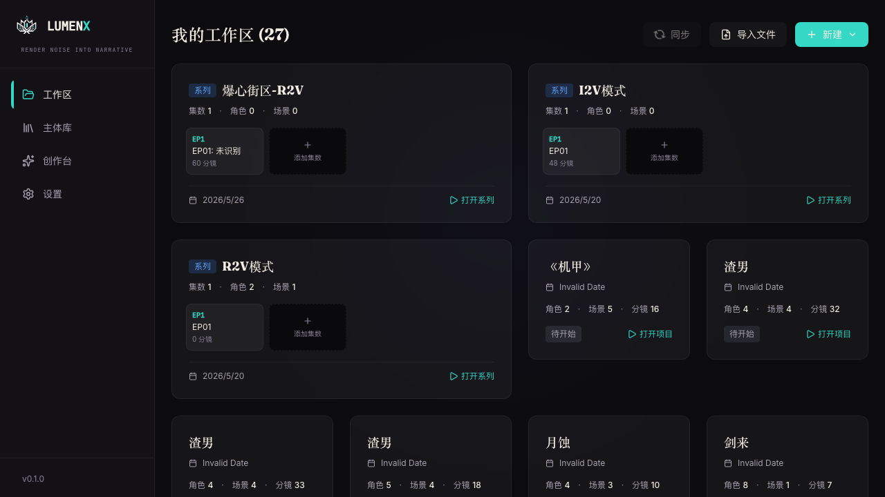
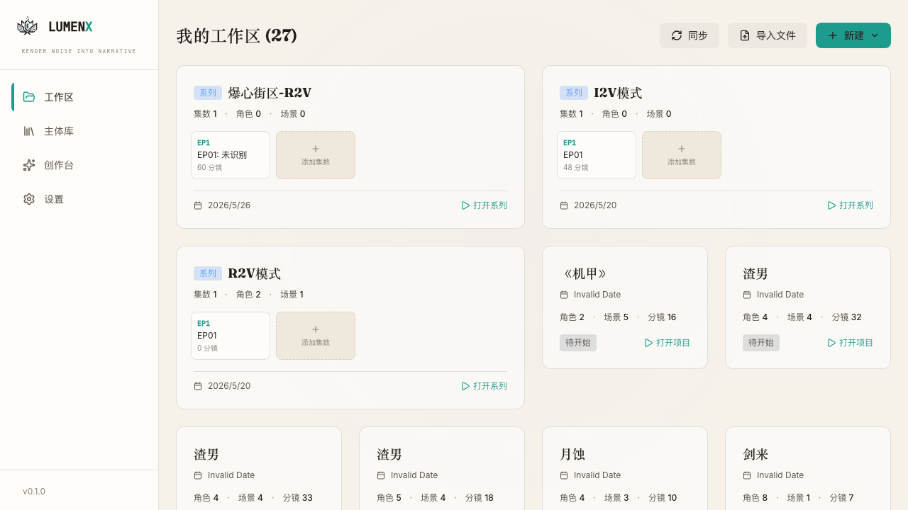
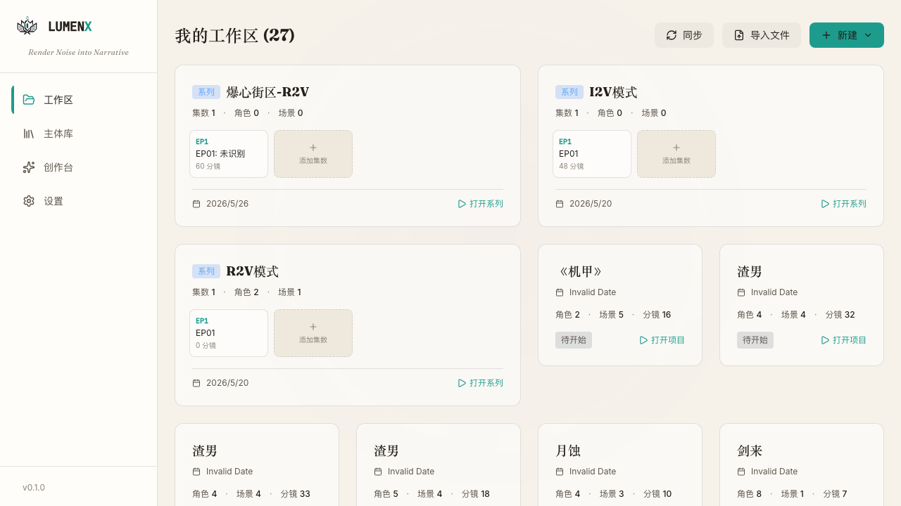
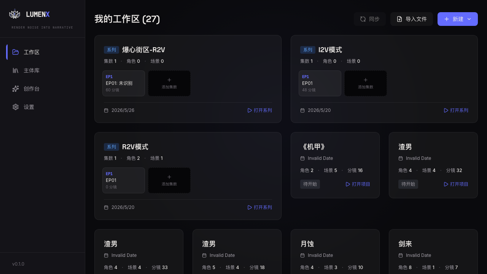
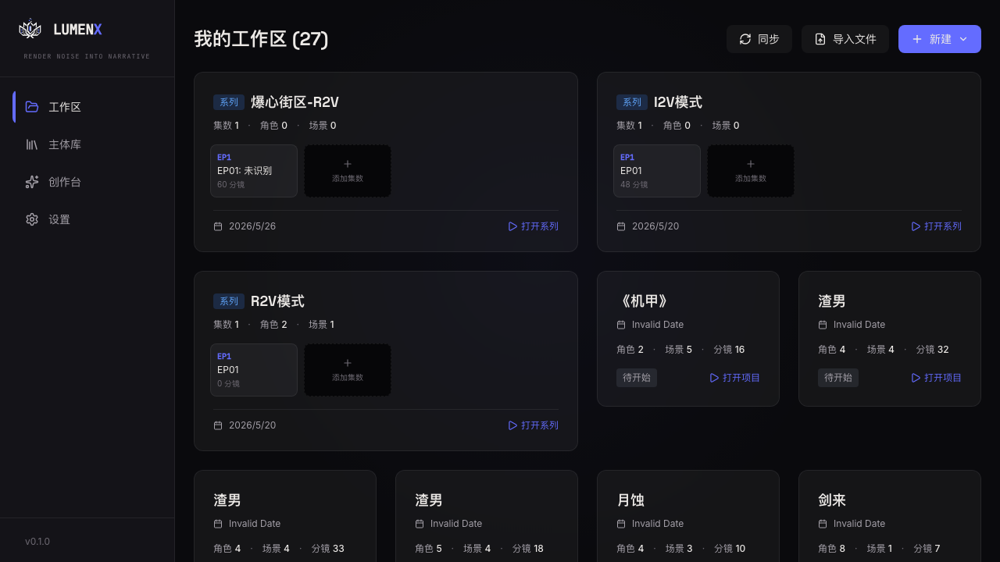
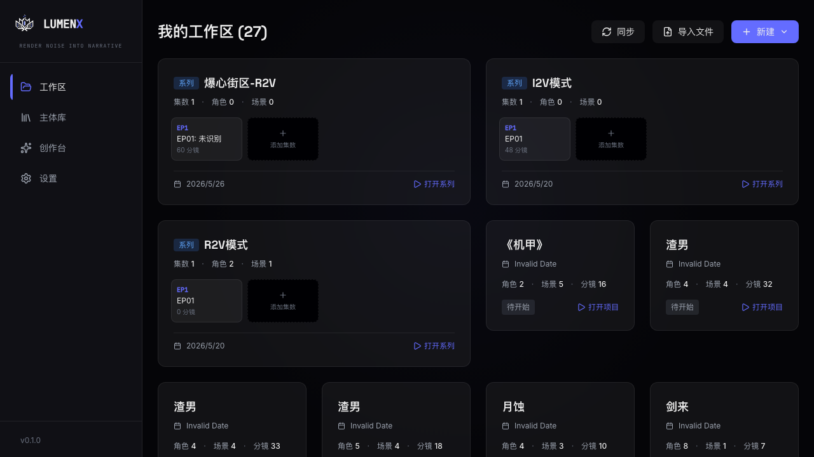
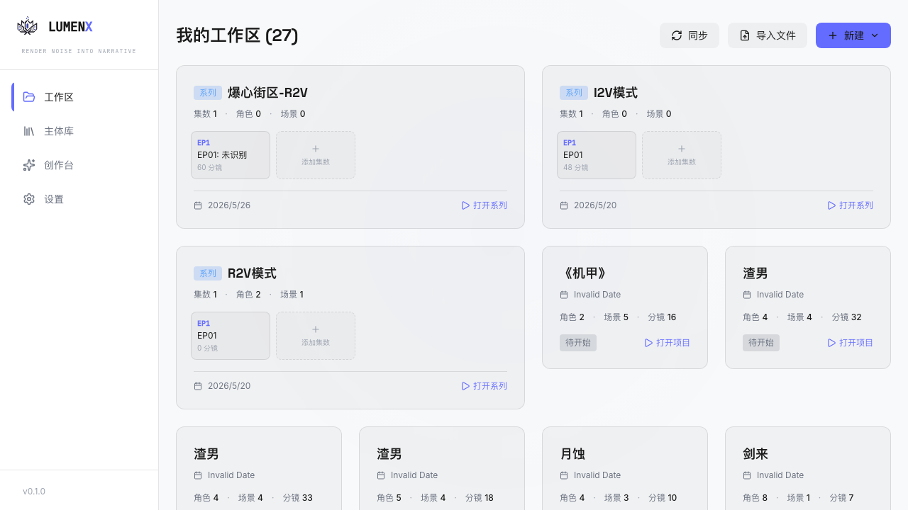
| 功能点 | Before（main） | After（pilot） | Delta |
|---|---|---|---|
| LOGO_SRC 主题映射 | atelier-dark/bridge-dark/brand-dark→logo-dark.png · atelier-light→logo-light-teal.png · brand-light→logo-light.png | 同左 | UNCHANGED |
| atelier-dark hue-rotate filter | hue-rotate(-64deg) saturate(1.35) brightness(1.08) | 同左 | UNCHANGED |
| hydration mounted gate | SSR-safe，避免主题闪烁 | 同左 | UNCHANGED |
| 「LUMEN / X / Studio」文字结构 | 3 段 span，X 取 primary 色 | 同左 | UNCHANGED |
| slogan 字体类 | font-mono · 8px · tracking 0.15em · uppercase | + atelier-display（atelier-* 下：11px / italic / tracking 0.02em / Fraunces · 其它主题：原样） | VISUAL |
| 功能点 | Before（main） | After（pilot） | Delta |
|---|---|---|---|
| 空状态文案 key | t("empty") | t("empty") | UNCHANGED |
| "新建项目" CTA | 按钮 + onClick 行为 | 同左 | UNCHANGED |
| H3 字号 / 字体 | text-xl font-medium | text-2xl font-display + atelier-display → atelier-* 下 Fraunces | VISUAL |
| 组件 | 新增功能 | 删除功能 | 语义/行为变更 | 视觉变更（受 5 主题门控） |
|---|---|---|---|---|
| SettingsPage / §0 Appearance | 0 | 0 | 0 | section 容器 → .atelier-card；H1 → .atelier-display |
| SettingsPage / §1 API | 0 | 0 | 0 | section 容器 → .atelier-card |
| SettingsPage / §2 Models | 0 | 0 | 0 | section 容器 → .atelier-card |
| SettingsPage / §3 Prompt | 0 | 0 | 0 | section 容器 → .atelier-card |
| SettingsPage / 页面背景 | 0 | 0 | 0 | 新增 .atelier-page-bloom + .atelier-page-grain 两层 fixed 装饰 |
| LumenXBranding / slogan | 0 | 0 | 0 | 仅 atelier-* 下：11px / italic / Fraunces |
| Workspace / 空状态 H3 | 0 | 0 | 0 | atelier-* 下：text-2xl / Fraunces / semibold |
| 其它 ~120 组件 / 路由 / store / API | 0 | 0 | 0 | 无 |
npx tsc --noEmit 通过，0 error。npm run check:colors 通过（无 token escape）。e7aaf1d · feat(theme): atelier pilot — SettingsPage + LumenXBranding
分支feat/atelier-pilot-20260611-161001 (worktree, based on feat/multi-theme-system)
影响文件frontend/src/app/globals.css · frontend/src/app/page.tsx · frontend/src/components/settings/SettingsPage.tsx · frontend/src/components/layout/LumenXBranding.tsx
评审 URLBefore http://localhost:3008/#/settings · After http://localhost:3009/#/settings